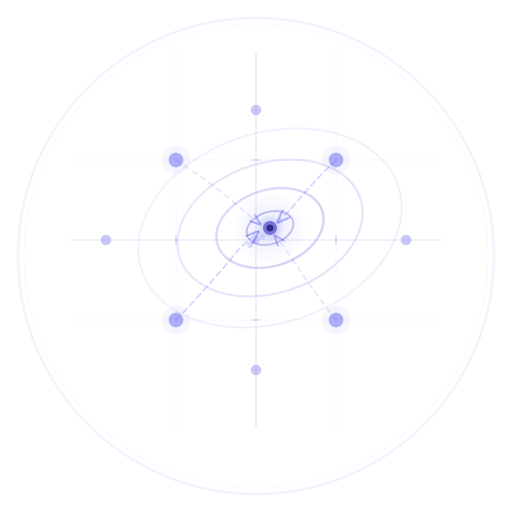
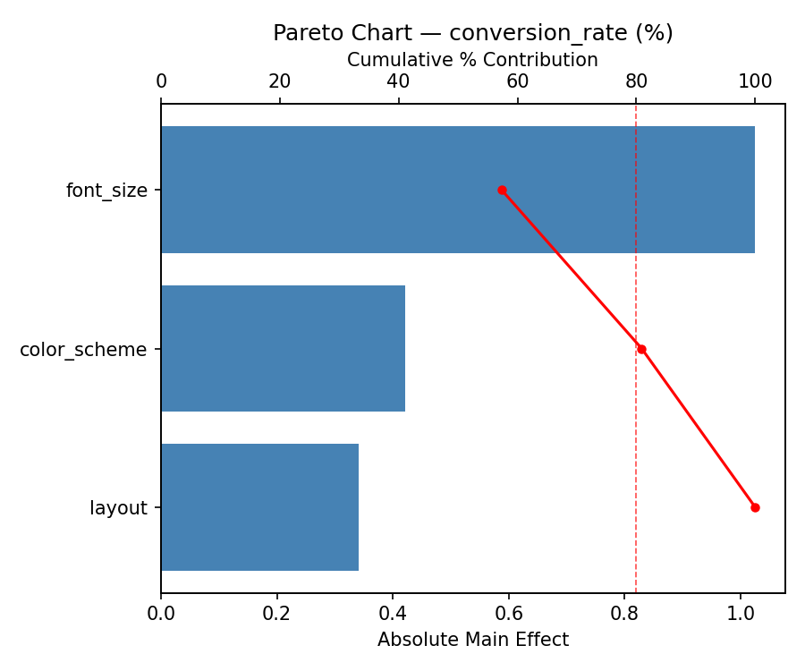
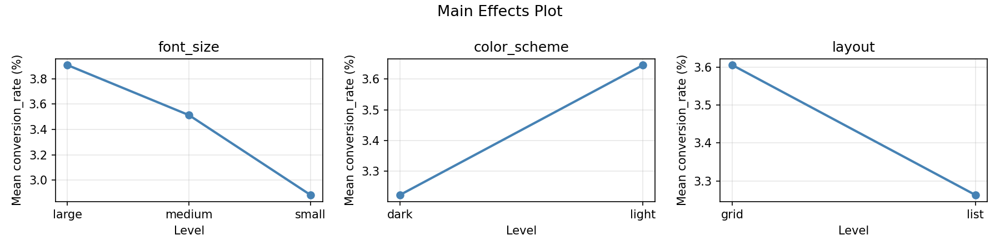

Test every combination of UI design choices to find the highest-converting variant.
This experiment investigates web app a/b testing. Full factorial design to optimize conversion rate across UI variants.
The design varies 3 factors: font size, ranging from small to large, color scheme, ranging from dark to light, and layout, ranging from grid to list. The goal is to optimize 1 response: conversion rate (%) (maximize). Fixed conditions held constant across all runs include page = homepage, traffic pct = 10.
A full factorial design was used to explore all 8 possible combinations of the 3 factors at two levels. This guarantees that every main effect and interaction can be estimated independently, at the cost of a larger experiment (12 runs).
Quadratic response surface models were fitted to capture potential curvature and factor interactions. The RSM contour plots below visualize how pairs of factors jointly affect each response.
For conversion rate, the most influential factors were font size (46.0%), layout (39.7%), color scheme (14.3%). The best observed value was 4.69 (at font size = medium, color scheme = dark, layout = grid).
You are optimizing a web application's conversion rate by testing combinations of UI design choices. With only 3 factors and a manageable 12-run total, full factorial lets you see every combination and detect all interactions.
3 × 2 × 2 = 12 runs. That's very manageable, all factors are categorical, and you want to detect all interactions (e.g., does dark mode perform differently with grid vs. list layout?). Full factorial requires zero external dependencies.
| Factor | Levels | Type |
|---|---|---|
font_size | small, medium, large | categorical |
color_scheme | dark, light | categorical |
layout | grid, list | categorical |
Fixed: page = homepage, traffic_pct = 10%
| Response | Direction | Unit |
|---|---|---|
conversion_rate | ↑ maximize | % |
env argument styleFactors are passed as environment variables: FONT_SIZE=medium COLOR_SCHEME=dark LAYOUT=grid ./sim.sh. This is natural for web app testing where you might inject variants via environment config.
The Full Factorial Design produces 12 runs. Each row is one experiment with specific factor settings.
| Run | font_size | color_scheme | layout |
|---|---|---|---|
| 1 | medium | light | list |
| 2 | medium | dark | list |
| 3 | small | light | grid |
| 4 | large | dark | grid |
| 5 | large | dark | list |
| 6 | medium | light | grid |
| 7 | large | light | list |
| 8 | small | light | list |
| 9 | medium | dark | grid |
| 10 | small | dark | grid |
| 11 | small | dark | list |
| 12 | large | light | grid |
| Feature | Value |
|---|---|
| Design type | full_factorial |
| Factor types | categorical (all 3, including 3-level) |
| Arg style | env (environment variables) |
| Script format | py (Python runner) |
--dry-run | Preview before generating |
| Total runs | 12 (3 × 2 × 2) |
Generated from actual experiment runs using the DOE Helper Tool.
The Pareto chart and main effects plot reveal which UI and content factors have the strongest influence on conversion rate.
Pareto Chart

Main Effects Plot
